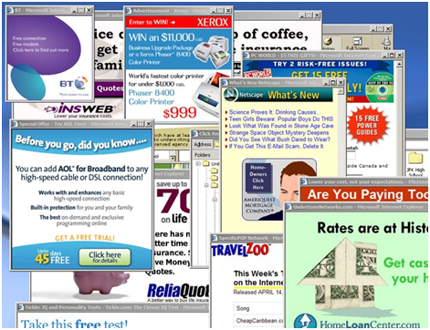

Adware,in italiano "Software sovvenzionato da pubblicita'", e' una tipologia di Software che presenta al suo interno inserzioni pubblicitarie esposte di proposito all'utente, allo scopo di indurlo ad effettuare ulteriori acquisti o eventuali upgrade del software utilizzato per generare maggiore profitto alla societa'.
Gli annunci pubblicitari possono comparire nell'interfaccia utente del software, durante il processo d'installazione o in entrambi i casi.
Questo sistema di distribuzione del software si e' diffuso notevolmente negli ultimi tempi; volte i produttori di software Adware mettono a disposizione dell'utente la possibilita' di rimuovere i banner pubblicitari dietro il pagamento di una piccola somma di denaro,i programmi propriamente definiti adware sono provvisti di un contratto di licenza d'uso consultabile dall'utente; in certi casi, pero', questo contratto e' reso dai produttori spropositatamente lungo e presentato con linguaggio vago , con la conseguenza che molti utenti procederanno con l'installazione senza aver ben compreso i termini di licenza.
Molte volte i programmi adware presentano rischi per la stabilita' e la sicurezza del computer: alcuni di essi aprono continuamente popup pubblicitari che rallentano notevolmente le prestazioni della macchina, altri modificano le pagine html direttamente nelle finestre del browser per includere link e messaggi pubblicitari propri, con la conseguenza che all'utente viene presentata una pagina diversa da quella voluta dall'autore. Molti adware inoltre comunicano le abitudini di navigazione dell'utente a server remoti, non e' facile essere a conoscenza di quali dati vengano inviati e ricevuti attraverso tale connessione, dati che possono essere potenzialmente dannosi se ricevuti o che violano la privacy se inviati. Per questo motivo, negli ultimi anni molti antivirus hanno iniziato a classificare vari adware come riskware (software rischiosi) e ne bloccano preventivamente l'installazione, chiedendo una conferma di procedere all'utente. E' anche da notare che la diffusione degli adware piu' invasivi e la conseguente diffidenza degli utenti verso questo tipo di licenze ha probabilmente inciso sulla decisione dei produttori di software che fino a qualche anno fa erano supportati da banner pubblicitari, di diffondere i propri software come freeware
